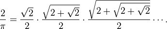
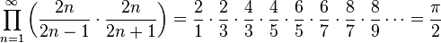
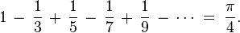
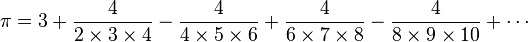

Calculate Pi Number in FortranSaturday, March 14, 2015
The number π is a mathematical constant, the ratio of a circle's circumference to its diameter, commonly approximated as 3.14159. It has been represented by the Greek letter "π" since the mid-18th century, though it is also sometimes spelled out as "pi" (/paɪ/).
Viète's Formula
In mathematics, Viète's formula is the following infinite product of nested radicals representing the mathematical constant π:

It is named after François Viète (1540–1603), who published it in 1593 in his work Variorum de rebus mathematicis responsorum, liber VIII. Using his formula, Viète calculated π to an accuracy of nine decimal digits.
function vietesSeries() result(pi) real :: pi integer, parameter :: ITERATIONS = 15 integer index integer jndex real factor pi = 1 do index = ITERATIONS, 2, -1 factor = 2 do jndex = 1, index - 1 factor = 2 + sqrt(factor) end do factor = sqrt(factor) pi = pi * factor / 2 end do pi = pi * sqrt(2.0) / 2 pi = 2 / pi end function
Wallis Formula
In mathematics, Wallis' product for π, written down in 1655 by John Wallis, states that

function wallisSeries() result(pi) real(8) :: pi integer, parameter :: ITERATIONS = 900000000 real(8) index index = 3 pi = 4 do while (index <= (ITERATIONS + 2)) pi = pi * ((index - 1) / index) * ((index + 1) / index) index = index + 2 end do end function
Leibniz Formula
In mathematics, the Leibniz formula for π, named after Gottfried Leibniz, states that

function leibnizSeries() result(pi) real(8) :: pi integer, parameter :: ITERATIONS = 900000000 integer sign integer index index = 1 sign = 1 pi = 0 do while (index <= (ITERATIONS * 2)) pi = pi + sign * (4.0 / index) sign = -sign index = index + 2 end do end function
Nilakantha Formula
An infinite series for π (published by Nilakantha in the 15th century) that converges more rapidly than the Gregory–Leibniz series is:

function nilakanthaSeries() result(pi) real(8) :: pi integer, parameter :: ITERATIONS = 500 integer sign real(8) index index = 2 sign = 1 pi = 3 do while (index <= (ITERATIONS * 2)) pi = pi + sign * (4 / (index * (index + 1) * (index + 2))) sign = -sign index = index + 2 end do end function
Results
Here are calculation performed with each of the algorithms for calculating π number to first eight decimal digits (3.14159265).
| Algorithm | Iterations | Time |
|---|---|---|
| Vietes | 15 | 0.000s |
| Wallis | 900 000 000 | 4.181s |
| Leibniz | 900 000 000 | 2.253s |
| Nilakantha | 500 | 0.000s |